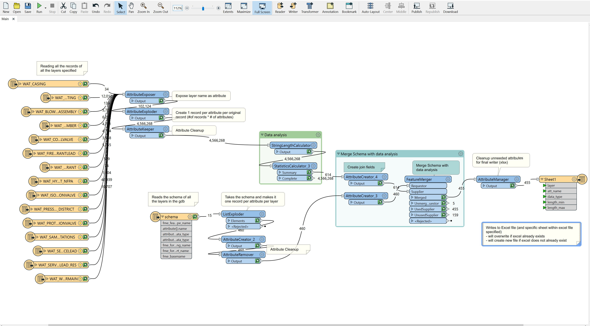
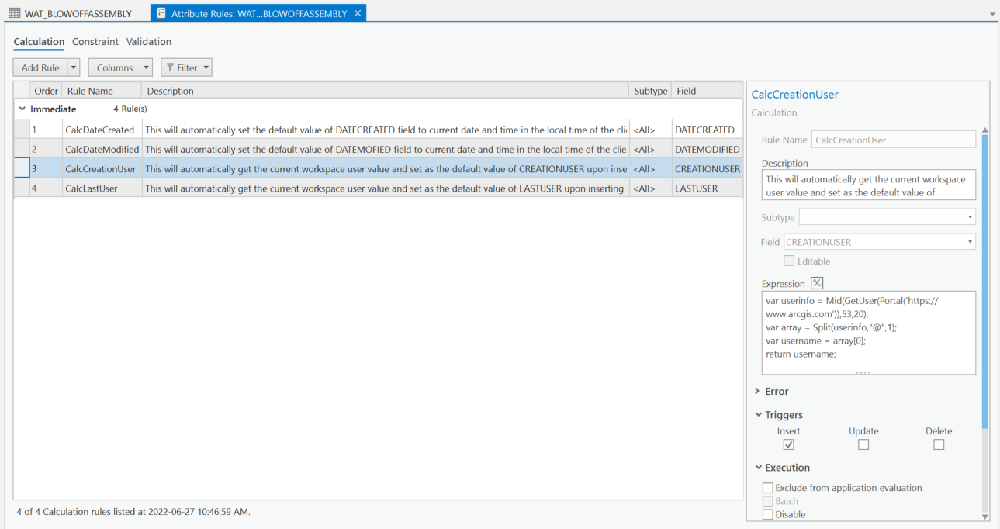
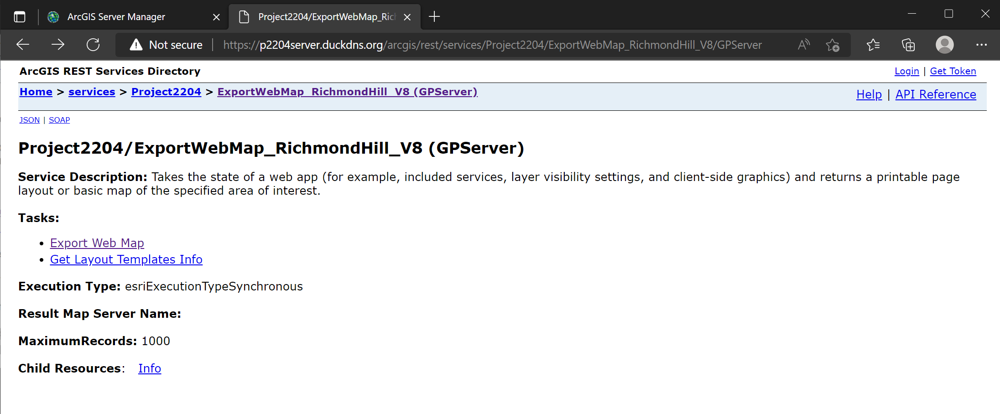
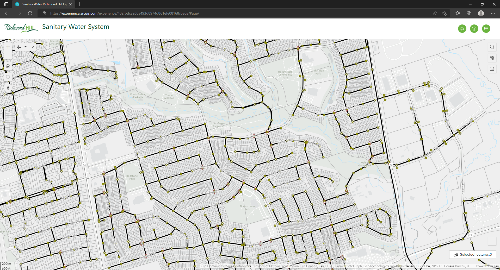

Water, storm and sanitary file geodatabases (fgdb) were provided to Beaver Solutions by the City of Richmond Hill.
To do pre-processing and preliminary analysis, the data was brought into ArcGIS Pro, attribute tables were opened, and the Get Count Tool was run to determines the number of features in each feature class. Data was loaded into FME.
It was determined that the database also needed enhancement in the form of global IDs, attribute rules, domains to constrain the values, and default values to reduce the manual data entry work, and reduced field lengths.
The main business need was for templates that would later be used in a printing tool and standardization of storm, water, and sanitary layers symbology.
Using the uniform resource locator (URL) of the print service, that points to the AGOL environment, a static map was able to be printed with a variety of formats and page sizes.

The layer list functionality allowed a user to customize what layers are shown on the map in case there is too much or too little information with the initial setup. While the sketch functionality gave the user the ability to draw points, lines, and polygons on a map with the intent of highlighting certain areas or features.
While a map was able to be printed via the API and the print service, the desired end product needed to display some dynamic variables entered by the user, such as 'address' and 'planning file number'. To achieve this, two geoprocessing services needed to be published to ArcGIS Server from ArcPro that were able to use the user input for the final map.
ArcGIS Server had to be introduced as a component to achieve the enhanced customization requested by the client. With that sever setup, the python tools could be published to the ArcGIS Server on Amazon Web Services (AWS) Elastic Compute Cloud 2 (EC2).
A '.pagx' file and inset map shapefile were created in ArcPro and registered with the ArcGIS Server for the services to use.
The geoprocessing print service is shareable across ESRI platforms, including ArcGIS Web AppBuilder. The URL pointing to the AGOL print service was changed to the new service published to the ArcGIS Server.

The HTML was hosted in GitHub for the purposes of the project, and then made accessible by the ArcGIS Hub, but can be moved to another host as needed.
Throughout this process, there were a total of three web maps that were created to be put into both the HTML code and also the ArcGIS Hub. Each of these web maps were created using ArcGIS Pro and then shared on AGOL. By demonstrating how web maps can interact with the printing tool geoprocessing service in a variety of both custom-built and pre-fabricated platforms, the client was able to see it's versatility. Web app builder was avoided as it will be phasing out within the next couple of years, and all future functionalities will be transitioning into experience builder. It was recommended to the client that they grow that applications functionality rather than using an expiring platform.
The final component to this solution was providing the City of Richmond Hill with documentation that they could use to replicate recommended solutions and the process of development. Throughout the process of this documentation, step by step processes were recorded throughout every week to ensure easy implementation for the client. Mistakes, problems encountered, recommendations for implementation on their own systems, and helpful links were also provided.

While working on the dynamic print service the team encountered an issue with lack of resources on the system as there were a few duplicate services running and therefore taking resources. This was identified through looking at ArcSOC processes in the task manager. To solve this there are two options, either stopping unneeded services in ArcGIS Manager to free up resources or to expand the instance size to accommodate more services.
Customized symbology is not rendering accurately within AGOL environment. Solution: Dictionary Renderer API Limitation: not applied into Legend (more details later...)
The ‘Schema Length Calculator’ script sets out to evaluate every attribute and the values stored therein and provide the user with a spreadsheet that lists all the data types and the minimum and maximum character counts for each field to determine in the data types and field widths are appropriate. This will allow for a quick reference in determining if some field values are reaching beyond their maximum character count or if fields have been sized too large for their use.
Sketch API will not allow saving of the sketch for other users to view or edit. Instead it has to be printed (to pdf) right away in order to share the sketch with anyone